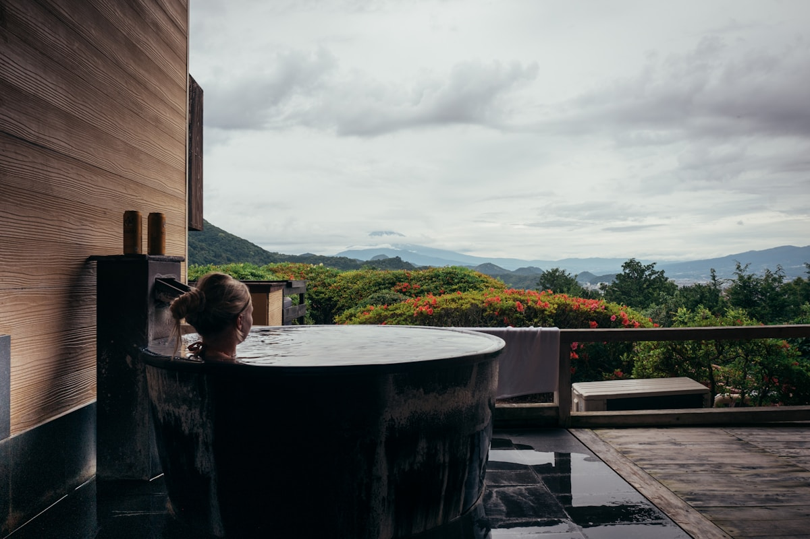
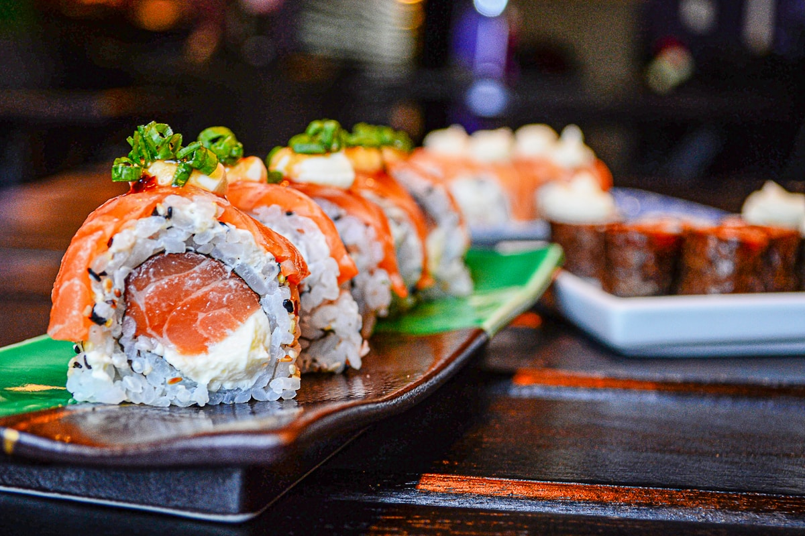
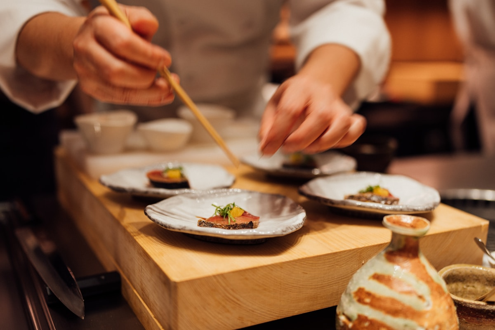
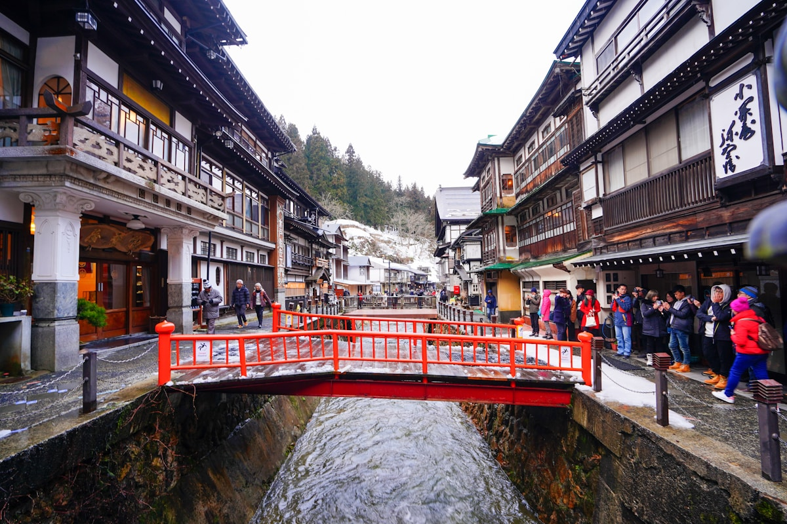

シーンを選ぶだけ
記念日・家族旅行・ひとり旅など、目的をタップするだけで最適な候補が絞り込まれます。
Scene × Stay × Gourmet
記念日・家族旅行・ひとり旅。旅の目的を選ぶだけで、シーンに合う宿と旅グルメをまとめて提案します。
シーンから旅を探す（無料） →登録不要で今すぐ体験・会員登録は30秒
Step 1 of 3 — 旅のシーンを選んでください
「記念日・特別な夜」の宿と旅グルメ — 342件ヒット



Find your scene
シーンを選ぶだけで、宿と旅グルメを提案します。
Problem
旅先での体験にこだわりを持つ人ほど、宿と食事のミスマッチで後悔する。そんな課題を解決するのが、トキナルです。
「宿は3時間かけて選んだのに、夜ご飯は近くの居酒屋に入っただけ。もったいなかったと思いました。」田中 あゆみ｜35歳・東京都

About Tokinaru
旅行シーン別に、宿泊施設と旅グルメをセットで探せる、国内旅行のためのディスカバリーサービス。
記念日・家族旅行・ひとり旅など、目的をタップするだけで最適な候補が絞り込まれます。
シーンに合う宿泊施設と近隣グルメを同一画面で比較。外部サービスを行き来する手間がありません。
選んだ宿・食事をマイプランに保存。旅行前から当日の案内までトキナルで完結します。
Why Tokinaru
目的を選ぶだけで、最適な施設が即座に絞り込まれます。
宿の周辺グルメを旅行者目線でキュレーション。
宿と食事を1画面で比較し、マイプランへ保存できます。
量より質。専門チームが審査した施設を掲載しています。
Trust & Safety
使いやすさと安全性を両立し、旅の計画をサポートします。
SSL暗号化通信を採用し、登録情報を厳格に管理します。
掲載前に品質チェックを実施し、情報を継続モニタリングします。
基本機能は無料。いつでもアカウントを削除できます。
旅行中のトラブルにもチャット・メールで対応します。
User voices
ベータ版ユーザー186名へのアンケートより。満足度4.7 / 5.0
How it works
記念日・家族旅行・ひとり旅など、今回の旅の目的を選択。
写真・口コミ・アクセス情報をまとめて確認できます。
気に入った施設を保存し、仲間と共有できます。
スマートフォンでプランを確認しながら旅を楽しめます。
FAQ
Travel Concierge
希望のシーンや食事の好みを入力すると、トキナルのおすすめを案内します。
Join Tokinaru
登録は30秒。完全無料・クレジットカード不要です。